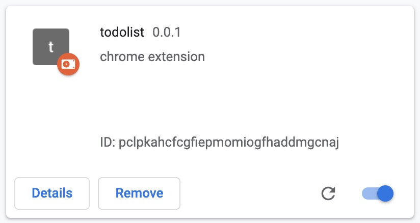
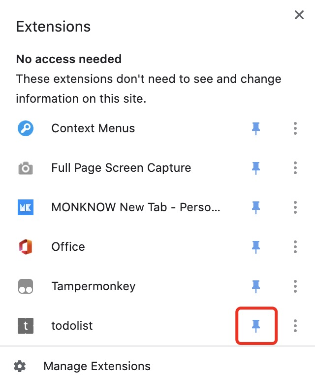
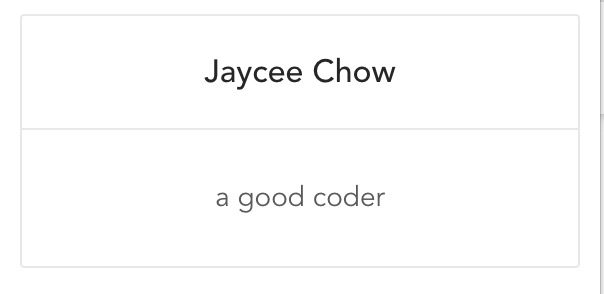

使用 Vue-CLI 4 开发 Chrome扩展
网络上大部分Chrome插件开发的教程还停留在 Vue-CLI 2 的时代。导致我一开始想用 Vue 写 chrome扩展 的时候受到了深深的打击。
本文将使用 Vue-CLI 4 来做一个简单的 demo，包括 UI框架(以 Ant Design Vue 为例) 的导入。
创建 vue cli 4 项目
创建一个项目
1 | vue create demo |
选择性地勾选 Babel、CSS Pre-processors、Linter / Formatter。
嗯，CSS预处理器我比较习惯用 Sass/SCSS。
使用ts开发时需要注意的点
Linter / Formatter 中的 TSLint 已经不再维护，如果你打算要用ts来开发，建议使用 ESLint + Prettier。
不要使用 class-style component syntax，见 vue-cli-plugin-chrome-ext。
添加插件
chrome-ext 插件
1 | vue add chrome-ext |
如果你前面选择了ts来开发，那么在这一步推荐勾选ts。
出现了一个错误:
1 | ⠋ Running completion hooks...error: Require statement not part of import statement (@typescript-eslint/no-var-requires) at vue.config.js:1:27: |
这是因为 eslint 不允许 commonjs 的语法，考虑到 vue.config.js 是一个比较特殊的文件，我们应该把它放到 .eslintignore 文件中，让 eslint 忽略 它。
在根目录创建一个 .eslintignore 的文件，并中写入:
1 | vue.config.js |
这代表将 vue.config.js 排除在了 eslint 监测范围之外。
vue-cli-plugin-chrome-ext 创建不是 SPA 应用，chrome 插件有很多界面，所以是每一个界面分别编译。
比如，src/popup 是一个界面，src/options 也是一个界面。
这样，原先很多文件都没用了，我们可以把它们删掉，比如 src/main.ts、src/App.vue。
热重载开发
使用 npm run build-watch 可以使用热重载的方式进行开发。
运行后会生成一个 dist 文件夹，每次你更改代码都会重新编译和加载一次。
为了方便调试，先将 dist 导入到 chrome插件 中。
进入 Chrome extensions，选择和加载 dist 文件夹进来:

加载成功之后，记得去右上角管理界面开启 popup界面 ( 新版本 chrome ):

现在，代码打完之后就能立马在 chrome 的 popup视图 里看到渲染结果。
使用 UI 组件
虽然 vue 是跑起来了，但是如果不能导入组件，那也没用。
以 ant design vue 为例，我门来测试一下。
1 | npm i --save ant-design-vue |
在 popup 界面导入
在 src/popup/index.ts 中添加以下内容:
1 | import Antd from 'ant-design-vue'; |
前面我们说过，src文件夹下面的每一个文件夹代表了一个页面，每个页面都有对应的 index.ts(相当于main.js)、index.html、App.vue。
也就是说，我们如果要使用UI库，不是在一个全局的 main.js 里面配置一遍就好了，我们需要在每一个页面的文件夹下的 index.ts 中都导入。
这里我们仅在 popup 界面下导入了，如果你需要在 options 界面中也使用，则需要去 src/options/index.ts 下面一样导入一遍。
编写一个简单的 popup 界面
使用 ant design 的 card 组件来测试一下，是否可以使用。
界面的主要代码，应该写在 App/App.vue 目录中。
1 | <template> |
效果大概这样子:

可见导入成功了。
待解决的问题
 wechat
wechat alipay
alipay